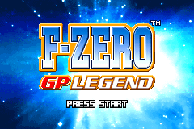
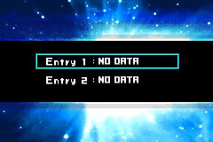

F-Zero - GP Legend (Unknown) (Proto) (2005-08-24) (Netcard)
SRAM 256K Save Format Mapped (Family Spec) 🎮 Button Cheat 💾 MultiBoot 🎮 4P Link 🔌 Nintendo Netcard (e-Reader Proto)
Cartridge Identity
- Game Code
BFZE(FamilyBFZ)- Header Title
F-ZERO2- Maker / Revision
01/ rev0- ROM Size
- 16.0 MiB (16,777,216 B)
- Save Media
SRAM 256K- SHA-256
ac9f0bb89007d8cbc3e547218a04eebeaad2d040d870eaf327680db39e896b26- Engine / SDK Group
comm-011(32 families)
Verified Button-Combo Cheat
Zero-patch retail controller cheat (Wave 3): 4-way counterfactually verified in headless
libmgba. See all verified titles in the Button-Combo Cheats Catalog.
- Effect
- Hidden Controller Sequence Unlock (ROM table 0x08542c9e)
- Button Sequence
B, A, B, A, UP, RIGHT, DOWN, LEFT- Verification Verdict
- Visual + RAM Unique Reaction
- Target RAM Address
0x0300000D- ROM Table Address
0x08542c9e- Timing Protocol
boot=540f,hold=6f,release=6f,settle=60f- Activation Indicator
- Headless libmgba 4-way counterfactual verified: unique 240x160 framebuffer and RAM/VRAM state transition distinct from control, wrong, and reversed inputs
gbakit cheat verify BFZE

Niche & Rare Accessories
Detected niche/rare GBA accessory support: 🔌 Nintendo Netcard (e-Reader Proto).
Full 343-ROM corpus breakdown in the Cartridge Hardware & Niche Accessories Reference · auto-detected from ROM bytes via
gbakit inspect.
- Nintendo Netcard (e-Reader Proto)
- Nintendo Netcard / Card-e network prototype build with
e-Readerhooks
Link Cable & Multiplayer Communications
This title contains detected communication capabilities: 💾 MultiBoot 🎮 4P Link.
Detailed protocol specifications, SIO registers, Joybus commands, and MultiBoot sequences are documented in the Link & Multiplayer Reference.
- Multi-Player SIO (4P)
- 16-bit ring network · SIOCNT (
0x04000128) literals:0x035808,0x0358f0,0x03594c· SIODATA32/SIOMULTI0 (0x04000120) literals:0x035a0c,0x035a70,0x035adc - Single-Cart MultiBoot
- Single-Cartridge MultiBoot (Download Play) client/server handler · Thumb SWI 0x25 (
0xDF25):0x05a7d6,0x101c60,0x1054ae,0x2ce2f2
Battery Save Format Specification (Family Shared)
This release shares its save architecture with canonical family reference F-Zero - Falcon Densetsu (Japan) (Family
BFZ).
Open Family Save Format Spec (BFZJ)Download save-format.json
- Canonical Specification
BFZJ· 19 mapped fields · 6 verified checksum(s) · Confidence: MEDIUM- gbakit Built-In Support
- Built-in (BFZJ)
gbakit save verify BFZJ save.sav
gbakit save decode BFZJ save.sav
gbakit save fix BFZJ damaged.sav -o repaired.savObserved Battery Save Layout
- Fill Byte & Active Size
0x00fill · 9,442–9,442 / 32,768 B active (entropy 3.54 bits/B)- Active Offset Ranges
0x0,0x4–0x7,0x1C–0x1E,0x20–0x25,0x27–0x29,0x2C–0x33,0x35,0x38–0x41, +8 more (803 total)- ASCII Magic / Headers
- None detected
- Observed Variable Regions
- 0 bytes across 0 spans: None
- Candidate Checksum/Counter Spans
- None
Asset Map (formatkit.asset-map.v1)
Download BFZE-r0-f499a88fae072452.asset-map.json.gz (271,933 B (265.6 KiB)) Verified PASS · 49.52% coverage
| Metric | Bytes / Value | Entries |
|---|---|---|
| Identified | 3,870,935 B (3.69 MiB) (23.07%) | 3,192 |
| Mapped | 0 B (0.00%) | 0 |
| Opaque | 4,436,432 B (4.23 MiB) (26.44%) | 1 |
| Unknown | 8,469,849 B (8.08 MiB) (50.48%) | 2,702 |
| Total ROM Size | 16,777,216 B (16.00 MiB) | 5,895 |
| Coverage % | 49.52% | — |
| Entries w/ Code Refs | 3,276 / 5,895 (55.57%) | — |
Top Identified Formats: compress.bios-lz77 (353 · 2,477,643 B (2.36 MiB)) · compress.bios-rle (1,334 · 949,252 B (927.0 KiB)) · gfx.gba-palette (1,501 · 426,752 B (416.8 KiB)) · rom.multiboot (2 · 14,280 B (13.9 KiB)) · audio.m4a-song-table (1 · 2,816 B (2.8 KiB)) · gba.rom-header (1 · 192 B)
Largest unknown Extents (Headerless / Custom Asset Candidates)
| Offset | Size | Shannon Entropy | Code Refs |
|---|---|---|---|
0x00AB6BD4 | 1,106,524 B (1.06 MiB) | 6.344 bits/B | 1 |
0x009C83C6 | 904,262 B (883.1 KiB) | 6.124 bits/B | 0 |
0x00268778 | 265,664 B (259.4 KiB) | 5.168 bits/B | 0 |
0x000E668C | 238,340 B (232.8 KiB) | 7.196 bits/B | 0 |
0x00142340 | 193,516 B (189.0 KiB) | 6.678 bits/B | 0 |
gzip -dk BFZE-r0-f499a88fae072452.asset-map.json.gz && gbakit map verify rom.gba BFZE-r0-f499a88fae072452.asset-map.json
gbakit assets export rom.gba --asset-map BFZE-r0-f499a88fae072452.asset-map.json -o out/Text, Fonts & Scene Data
- Primary Text Encoding
- Plain ASCII (uncompressed) (
90ASCII strings) - Font & VWF Indicators
- VWF Width Table 1bpp Font · BIOS SWIs: BitUnPack
0x10:9· LZ770x11/12:22· Huffman0x13:7· RLE0x14/15:17 - Scene & Packaging
36ROM pointer tables (≥32 entries,5≥200) ·168relativeu32TOCs ·237OAM metasprite hits · FourCC:GBFS
Hardware MMIO Subsystems
ppu_display0x8000d2csave_bus_sram_flash0x803af70
Regional Variants & Revisions (Family BFZ)
- F-Zero - Falcon Densetsu (Japan) (
BFZJ, 16 MiB) - F-Zero - Falcon Densetsu (Japan) (Virtual Console) (
BFZJ, 16 MiB) - F-Zero - GP Legend (Europe) (En,Fr,De,Es,It) (
BFZP, 16 MiB) - F-Zero - GP Legend (Europe) (En,Fr,De,Es,It) (Virtual Console) (
BFZP, 16 MiB) - F-Zero - GP Legend (Unknown) (Proto) (2005-08-09) (Netcard) (
BFZE, 16 MiB) - F-Zero - GP Legend (Unknown) (Proto) (2005-08-11) (Netcard) (
BFZE, 16 MiB) - F-Zero - GP Legend (Unknown) (Proto) (2005-08-15) (Netcard) (
BFZE, 16 MiB) - F-Zero - GP Legend (Unknown) (Proto) (2005-08-16) (Netcard) (
BFZE, 16 MiB) - F-Zero - GP Legend (Unknown) (Proto) (2005-08-17) (Netcard) (
BFZE, 16 MiB) - F-Zero - GP Legend (Unknown) (Proto) (2005-08-18 02.40.54) (Netcard) (
BFZE, 16 MiB) - F-Zero - GP Legend (Unknown) (Proto) (2005-08-18 23.00.14) (Netcard) (
BFZE, 16 MiB) - F-Zero - GP Legend (Unknown) (Proto) (2005-08-23) (Netcard) (
BFZE, 16 MiB) - F-Zero - GP Legend (Unknown) (Proto) (2005-08-26) (Netcard) (
BFZE, 16 MiB) - F-Zero - GP Legend (Unknown) (Proto) (2005-08-29) (Netcard) (
BFZE, 16 MiB) - F-Zero - GP Legend (Unknown) (Proto) (2005-09-02 00.17.57) (Netcard) (
BFZE, 16 MiB) - F-Zero - GP Legend (Unknown) (Proto) (2005-09-02 01.21.24) (Netcard) (
BFZE, 16 MiB) - F-Zero - GP Legend (USA) (
BFZE, 16 MiB) - F-Zero - GP Legend (USA) (Virtual Console) (
BFZE, 16 MiB)